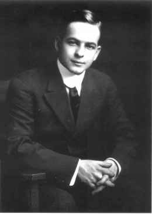
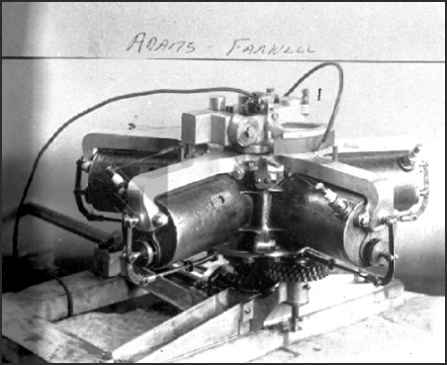
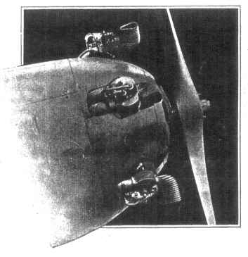
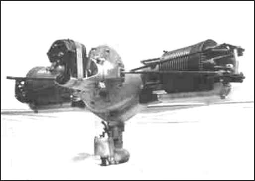

1867-1944 |
|  |  |  |  | ||
| Biography |
Adams Farwell Automobile Engine Remodeled |
Moore - Power Three Valve Engine |
Planes |
Dies After Extended Illness THE WASHINGTON POST Saturday, April 15, 1944 15, 1944 Collection of Cheryl Moore, 2-2-05 A native of Ohio, Mr. Moore was noted in Washington and New York as an expert on motors. He at one time was associated with Emil Berliner, automotive engineer and inventor, and helped with the development of the gyro engine, which set a speed record for planes in 1911. Mr. Moore, prior to World War I, went to England, where his engineering knowledge was used in furthering aviation. He later came to Washington with the Bureau of Aeronautics, now the Civil Aeronautics Administration, where he was employed as an expert on engines. In 1929 he developed a 3-valve engine. He was a member of The Early Birds, an organization of persons who flew prior to December 17, 1916. He is survived by a daughter, Mrs. Katherine Turner of Takoma Park, Md., and five sons, Ralph, in the Navy, Robert S. Jr., in the Army, Frank of Takoma Park, Md., Allen of Paterson, N.J., and Don of Boonton, N. J. Funeral services are tentatively set for Tuesday ........ |
|
If you have any information on this Early Bird, please contact me. E-mail to Ralph Cooper Back |